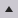

- 00:01:46fish6145:
- 00:01:48木木大大 (dadadadalin):
- 00:01:53DKouichi:
- 00:01:54趴在桌上睡覺 (diormoon0616):
- 00:01:55荷包蛋營養 (winnner533):
- 00:01:58玆歐巴 (yen9007):
- 00:02:02荷包蛋營養 (winnner533):
- 00:02:06趴在桌上睡覺 (diormoon0616):
- 00:02:07屎蓋褲 (skycools):
- 00:02:11木木大大 (dadadadalin):
- 00:02:12wwe4360607:
- 00:02:13滑鼠 (axlyuki):
- 00:02:13睪慶的直播間 (2147529):
- 00:02:18荷包蛋營養 (winnner533):
- 00:02:19屎蓋褲 (skycools):
- 00:02:26玆歐巴 (yen9007):
- 00:02:27造敢若飛 (hwcho):
- 00:02:32陳煙煙 (lizoooohello):
- 00:02:32睪慶的直播間 (2147529):
- 00:02:35玆歐巴 (yen9007):
- 00:02:42張東熙 (dirtythings):
- 00:02:45玆歐巴 (yen9007):
- 00:02:45睪慶的直播間 (2147529):
- 00:02:52玆歐巴 (yen9007):
- 00:02:58轉吧轉吧七彩霓虹燈 (tiger810307):
- 00:03:02小林江 (wearanew):
- 00:03:11睪慶的直播間 (2147529):
- 00:03:11滑鼠 (axlyuki):
- 00:03:13睪慶的直播間 (2147529):
- 00:03:16轉吧轉吧七彩霓虹燈 (tiger810307):
- 00:03:24荷包蛋營養 (winnner533):
- 00:03:31屎蓋褲 (skycools):
- 00:03:32屎蓋褲 (skycools):
- 00:03:39zax3345:
- 00:03:41荷包蛋營養 (winnner533):
- 00:03:45睪慶的直播間 (2147529):
- 00:03:50屎蓋褲 (skycools):
- 00:03:51小林江 (wearanew):
- 00:03:56一起學貓叫 (5050fiftyfifty):
- 00:03:57睪慶的直播間 (2147529):
- 00:04:01荷包蛋營養 (winnner533):
- 00:04:04木木大大 (dadadadalin):
- 00:04:10荷包蛋營養 (winnner533):
- 00:04:18屎蓋褲 (skycools):
- 00:04:29睪慶的直播間 (2147529):
- 00:04:30遊戲小虎 (gametora):
- 00:04:33wwe4360607:
- 00:04:36珊珊喵 (tiffany_lu):
- 00:04:40荷包蛋營養 (winnner533):
- 00:04:41睪慶的直播間 (2147529):
- 00:04:55睪慶的直播間 (2147529):
- 00:04:56小林江 (wearanew):
- 00:05:03睪慶的直播間 (2147529):
- 00:05:03昇_哥 (dducklin1975):
- 00:05:07wwe4360607:
- 00:05:12睪慶的直播間 (2147529):
- 00:05:21荷包蛋營養 (winnner533):
- 00:05:39張東熙 (dirtythings):
- 00:05:40品0品 (momopinch):
- 00:05:40一起學貓叫 (5050fiftyfifty):
- 00:05:42解召人_壯壯 (gratoee):
- 00:05:44解召人_壯壯 (gratoee):
- 00:05:44睪慶的直播間 (2147529):
- 00:05:49wtaps135:
- 00:05:55張東熙 (dirtythings):
- 00:05:55一起學貓叫 (5050fiftyfifty):
- 00:05:59zax3345:
- 00:06:06睪慶的直播間 (2147529):
- 00:06:08荷包蛋營養 (winnner533):
- 00:06:11解召人_壯壯 (gratoee):
- 00:06:24睪慶的直播間 (2147529):
- 00:06:28解召人_壯壯 (gratoee):
- 00:06:28衝車の將軍 (generalsprint):
- 00:06:29荷包蛋營養 (winnner533):
- 00:06:32解召人_壯壯 (gratoee):
- 00:06:33胖喵喵 (fatcat_tw):
- 00:06:35品0品 (momopinch):
- 00:06:40解召人_壯壯 (gratoee):
- 00:06:43解召人_壯壯 (gratoee):
- 00:06:47睪慶的直播間 (2147529):
- 00:06:47張東熙 (dirtythings):
- 00:06:54wtaps135:
- 00:07:02zax3345:
- 00:07:07睪慶的直播間 (2147529):
- 00:07:12國際空港 (a456753):
- 00:07:13荷包蛋營養 (winnner533):
- 00:07:16國際空港 (a456753):
- 00:07:22一起學貓叫 (5050fiftyfifty):
- 00:07:27我啊逸仔 (ee55665566):
- 00:07:43屎蓋褲 (skycools):
- 00:07:49哆啦噹 (doradang):
- 00:07:56睪慶的直播間 (2147529):
- 00:07:57木木大大 (dadadadalin):
- 00:07:59積積你陰德 (jijiniinder):
- 00:08:04睪慶的直播間 (2147529):
- 00:08:10解召人_壯壯 (gratoee):
- 00:08:12國際空港 (a456753):
- 00:08:13睪慶的直播間 (2147529):
- 00:08:16早晨容易伯 (widhe4823):
- 00:08:18睪慶的直播間 (2147529):
- 00:08:19張東熙 (dirtythings):
- 00:08:20

peterckh: - 00:08:21zax3345:
- 00:08:21積積你陰德 (jijiniinder):
- 00:08:22早晨容易伯 (widhe4823):
- 00:08:23睪慶的直播間 (2147529):
- 00:08:28早晨容易伯 (widhe4823):
- 00:08:29張東熙 (dirtythings):
- 00:08:30errolchen:
- 00:08:33睪慶的直播間 (2147529):
- 00:08:45allenchen20:
- 00:08:46愛河水特調蜂蜜檸檬 (nonamewolf1993):
- 00:09:11zax3345:
- 00:09:13Darknight1108:
- 00:09:13
- 00:09:28木木大大 (dadadadalin):
- 00:09:38智薰 (taeyeon_h):
- 00:10:02睪慶的直播間 (2147529):
- 00:10:28解召人_壯壯 (gratoee):
- 00:10:42睪慶的直播間 (2147529):
- 00:10:4298vcxz:
- 00:10:46一起學貓叫 (5050fiftyfifty):
- 00:10:49睪慶的直播間 (2147529):
- 00:10:50木木大大 (dadadadalin):
- 00:10:53user74123bot:
- 00:10:54
- 00:10:57睪慶的直播間 (2147529):
- 00:11:01hihikoko:
- 00:11:02hihikoko:
- 00:11:05一起學貓叫 (5050fiftyfifty):
- 00:11:07解召人_壯壯 (gratoee):
- 00:11:08荷包蛋營養 (winnner533):
- 00:11:11jimmyang95:
- 00:11:13
- 00:11:16愛河水特調蜂蜜檸檬 (nonamewolf1993):
- 00:11:20睪慶的直播間 (2147529):
- 00:11:20季窘 (yue1013):
- 00:11:24一起學貓叫 (5050fiftyfifty):
- 00:11:27解召人_壯壯 (gratoee):
- 00:11:30屎蓋褲 (skycools):
- 00:11:33荷包蛋營養 (winnner533):
- 00:11:34睪慶的直播間 (2147529):
- 00:11:35TW_Hamster_2022:
- 00:11:37荷包蛋營養 (winnner533):
- 00:11:45我啊逸仔 (ee55665566):
- 00:11:46睪慶的直播間 (2147529):
- 00:11:46馬鹿野狼 (jiujiu520):
- 00:11:48屎蓋褲 (skycools):
- 00:11:53屎蓋褲 (skycools):
- 00:11:59TW_Hamster_2022:
- 00:12:02摩根_ (morgen000):
- 00:12:06荷包蛋營養 (winnner533):
- 00:12:07小小尼歐 (lofetchen):
- 00:12:08艾登博士 (aydin520):
- 00:12:16睪慶的直播間 (2147529):
- 00:12:29荷包蛋營養 (winnner533):
- 00:12:51小小尼歐 (lofetchen):
- 00:13:03荷包蛋營養 (winnner533):
- 00:13:03屎蓋褲 (skycools):
- 00:13:17荷包蛋營養 (winnner533):
- 00:13:26荷包蛋營養 (winnner533):
- 00:13:32屎蓋褲 (skycools):
- 00:13:33TW_Hamster_2022:
- 00:13:36睪慶的直播間 (2147529):
- 00:13:38解召人_壯壯 (gratoee):
- 00:13:40威廉提斯 (williamts0610):
- 00:13:46屎蓋褲 (skycools):
- 00:13:46智薰 (taeyeon_h):
- 00:13:54可愛的屁寶 (760jamesoo):
- 00:13:57荷包蛋營養 (winnner533):
- 00:14:18我啊逸仔 (ee55665566):
- 00:14:20解召人_壯壯 (gratoee):
- 00:14:26解召人_壯壯 (gratoee):
- 00:14:31睪慶的直播間 (2147529):
- 00:14:36季窘 (yue1013):
- 00:14:45解召人_壯壯 (gratoee):
- 00:14:49睪慶的直播間 (2147529):
- 00:14:51drjkuo:
- 00:14:53animalcrossingfan66:
- 00:15:05睪慶的直播間 (2147529):
- 00:15:07解召人_壯壯 (gratoee):
- 00:15:09drjkuo:
- 00:15:14TW_Hamster_2022:
- 00:15:18小小尼歐 (lofetchen):
- 00:15:19解召人_壯壯 (gratoee):
- 00:15:19季窘 (yue1013):
- 00:15:25drjkuo:
- 00:15:26解召人_壯壯 (gratoee):
- 00:15:53drjkuo:
- 00:15:54木木大大 (dadadadalin):
- 00:16:01sammy98372597:
- 00:16:02高雄淋雨中 (zacktsai0207):
- 00:16:03品0品 (momopinch):
- 00:16:07睪慶的直播間 (2147529):
- 00:16:11小小尼歐 (lofetchen):
- 00:16:19一起學貓叫 (5050fiftyfifty):
- 00:16:21荷包蛋營養 (winnner533):
- 00:16:22解召人_壯壯 (gratoee):
- 00:16:24季窘 (yue1013):
- 00:16:38小小尼歐 (lofetchen):
- 00:16:42木木大大 (dadadadalin):
- 00:16:58木木大大 (dadadadalin):
- 00:17:05drjkuo:
- 00:17:18sammy98372597:
- 00:17:34屎蓋褲 (skycools):
- 00:17:45drjkuo:
- 00:17:46StreamElements:
- 00:17:58drjkuo:
- 00:18:03木木大大 (dadadadalin):
- 00:18:03高雄淋雨中 (zacktsai0207):
- 00:18:04小小尼歐 (lofetchen):
- 00:18:07
- 00:18:07StreamElements:
- 00:18:11hihikoko:
- 00:18:15一起學貓叫 (5050fiftyfifty):
- 00:18:22good0704:
- 00:18:22高雄淋雨中 (zacktsai0207):
- 00:18:51解召人_壯壯 (gratoee):
- 00:18:52品0品 (momopinch):
- 00:18:54睪慶的直播間 (2147529):
- 00:19:07木木大大 (dadadadalin):
- 00:19:07睪慶的直播間 (2147529):
- 00:19:11drjkuo:
- 00:19:14三皈依30678 (three30678refuge):
- 00:19:25解召人_壯壯 (gratoee):
- 00:19:35小小尼歐 (lofetchen):
- 00:19:35zax3345:
- 00:19:38三皈依30678 (three30678refuge):
- 00:19:40一起學貓叫 (5050fiftyfifty):
- 00:19:41drjkuo:
- 00:19:44TRAvianppp:
- 00:19:45解召人_壯壯 (gratoee):
- 00:19:45sammy98372597:
- 00:19:59木木大大 (dadadadalin):
- 00:20:00fusher135:
- 00:20:06jimmyang95:
- 00:20:08吳宜航 (q12121):
- 00:20:14sammy98372597:
- 00:20:25高雄淋雨中 (zacktsai0207):
- 00:20:27TRAvianppp:
- 00:20:36小小尼歐 (lofetchen):
- 00:20:44TRAvianppp:
- 00:20:45睪慶的直播間 (2147529):
- 00:20:50睪慶的直播間 (2147529):
- 00:21:08你媽的餒餒 (lemont__t):
- 00:21:13
- 00:21:17睪慶的直播間 (2147529):
- 00:21:22drjkuo:
- 00:21:23睪慶的直播間 (2147529):
- 00:21:44揺れる想い (basket0205):
- 00:21:56drjkuo:
- 00:22:00스티치냥 (eric_0626):
- 00:22:03小小尼歐 (lofetchen):
- 00:22:27睪慶的直播間 (2147529):
- 00:22:34解召人_壯壯 (gratoee):
- 00:22:36睪慶的直播間 (2147529):
- 00:22:38jimmyang95:
- 00:22:46奶奶個熊 (champheart):
- 00:22:48jimmyang95:
- 00:22:49你媽的餒餒 (lemont__t):
- 00:22:50睪慶的直播間 (2147529):
- 00:23:00PleaseTrustMe:
- 00:23:02季窘 (yue1013):
- 00:23:07吳宜航 (q12121):
- 00:23:22jimmyang95:
- 00:23:24睪慶的直播間 (2147529):
- 00:23:24霍肯先生 (hogan_26):
- 00:23:30解召人_壯壯 (gratoee):
- 00:23:31我啊逸仔 (ee55665566):
- 00:23:34drjkuo:
- 00:23:51王弟 (wandy81d):
- 00:24:02解召人_壯壯 (gratoee):
- 00:24:04睪慶的直播間 (2147529):
- 00:24:14dxidxll:
- 00:24:19fusher135:
- 00:24:28zax3345:
- 00:24:34睪慶的直播間 (2147529):
- 00:24:43jimmyang95:
- 00:24:47睪慶的直播間 (2147529):
- 00:25:07王弟 (wandy81d):
- 00:25:11睪慶的直播間 (2147529):
- 00:25:54睪慶的直播間 (2147529):
- 00:26:08睪慶的直播間 (2147529):
- 00:26:17瑪賈賈 (ericsposen):
- 00:26:21瑪賈賈 (ericsposen):
- 00:26:40木木大大 (dadadadalin):
- 00:26:48高雄淋雨中 (zacktsai0207):
- 00:26:58解召人_壯壯 (gratoee):
- 00:26:58王弟 (wandy81d):
- 00:27:02瑪賈賈 (ericsposen):
- 00:27:10揺れる想い (basket0205):
- 00:27:13解召人_壯壯 (gratoee):
- 00:27:15解召人_壯壯 (gratoee):
- 00:27:22瑪賈賈 (ericsposen):
- 00:27:28霍肯先生 (hogan_26):
- 00:27:28睪慶的直播間 (2147529):
- 00:27:34小小尼歐 (lofetchen):
- 00:27:43賈斯丁 (justinstella):
- 00:27:45王弟 (wandy81d):
- 00:27:48jimmyang95:
- 00:27:49睪慶的直播間 (2147529):
- 00:28:05睪慶的直播間 (2147529):
- 00:28:12jimmyang95:
- 00:28:21吳宜航 (q12121):
- 00:28:33zax3345:
- 00:28:41睪慶的直播間 (2147529):
- 00:28:48賈斯丁 (justinstella):
- 00:29:14睪慶的直播間 (2147529):
- 00:29:19睪慶的直播間 (2147529):
- 00:29:30睪慶的直播間 (2147529):
- 00:30:05zax3345:
- 00:30:16annjiang:
- 00:30:18荷包蛋營養 (winnner533):
- 00:31:28木木大大 (dadadadalin):
- 00:31:40小小尼歐 (lofetchen):
- 00:31:42高雄淋雨中 (zacktsai0207):
- 00:32:02荷包蛋營養 (winnner533):
- 00:32:08sammy98372597:
- 00:32:15睪慶的直播間 (2147529):
- 00:32:16高雄淋雨中 (zacktsai0207):
- 00:32:21睪慶的直播間 (2147529):
- 00:32:32高雄淋雨中 (zacktsai0207):
- 00:32:34睪慶的直播間 (2147529):
- 00:32:37睪慶的直播間 (2147529):
- 00:32:41睪慶的直播間 (2147529):
- 00:32:45高雄淋雨中 (zacktsai0207):
- 00:32:48sammy98372597:
- 00:32:52睪慶的直播間 (2147529):
- 00:33:10王弟 (wandy81d):
- 00:33:19sammy98372597:
- 00:33:21小小尼歐 (lofetchen):
- 00:33:29睪慶的直播間 (2147529):
- 00:33:33木木大大 (dadadadalin):
- 00:33:36sammy98372597:
- 00:33:44TRAvianppp:
- 00:33:44睪慶的直播間 (2147529):
- 00:33:50小小尼歐 (lofetchen):
- 00:33:55睪慶的直播間 (2147529):
- 00:33:59TW_Hamster_2022:
- 00:34:01睪慶的直播間 (2147529):
- 00:34:08小小尼歐 (lofetchen):
- 00:34:53zax3345:
- 00:35:06小夜紫 (ybs126):
- 00:35:07小小尼歐 (lofetchen):
- 00:35:14智薰 (taeyeon_h):
- 00:35:16不啾皮卡丘 (lonelych):
- 00:35:21睪慶的直播間 (2147529):
- 00:35:26睪慶的直播間 (2147529):
- 00:35:26王弟 (wandy81d):
- 00:35:32drjkuo:
- 00:35:34睪慶的直播間 (2147529):
- 00:35:36我啊逸仔 (ee55665566):
- 00:35:36不啾皮卡丘 (lonelych):
- 00:35:42王弟 (wandy81d):
- 00:35:50sammy98372597:
- 00:35:57睪慶的直播間 (2147529):
- 00:36:02小小尼歐 (lofetchen):
- 00:36:02不啾皮卡丘 (lonelych):
- 00:36:04睪慶的直播間 (2147529):
- 00:36:04sammy98372597:
- 00:36:19王弟 (wandy81d):
- 00:36:36阿仁找舅舅 (delong3120):
- 00:36:44sammy98372597:
- 00:36:49木木大大 (dadadadalin):
- 00:36:52阿仁找舅舅 (delong3120):
- 00:36:54高雄淋雨中 (zacktsai0207):
- 00:36:57fusher135:
- 00:37:13drjkuo:
- 00:37:15sammy98372597:
- 00:37:16andyyyy____:
- 00:37:17不啾皮卡丘 (lonelych):
- 00:37:18sammy98372597:
- 00:37:20sammy98372597:
- 00:37:21fusher135:
- 00:37:22drjkuo:
- 00:37:25我啊逸仔 (ee55665566):
- 00:37:26阿仁找舅舅 (delong3120):
- 00:37:28sammy98372597:
- 00:37:34一起學貓叫 (5050fiftyfifty):
- 00:37:56我啊逸仔 (ee55665566):
- 00:38:05fusher135:
- 00:39:27sammy98372597:
- 00:39:33不啾皮卡丘 (lonelych):
- 00:39:40純純的小光 (awe1988):
- 00:39:58不啾皮卡丘 (lonelych):
- 00:40:20純純的小光 (awe1988):
- 00:40:28高雄淋雨中 (zacktsai0207):
- 00:40:29不啾皮卡丘 (lonelych):
- 00:40:49純純的小光 (awe1988):
- 00:40:57不啾皮卡丘 (lonelych):
- 00:41:16純純的小光 (awe1988):
- 00:41:23霍肯先生 (hogan_26):
- 00:43:27木木大大 (dadadadalin):
- 00:43:39木木大大 (dadadadalin):
- 00:43:51drjkuo:
- 00:43:52高雄淋雨中 (zacktsai0207):
- 00:44:06asd3143141314911119tw:
- 00:44:14木木大大 (dadadadalin):
- 00:44:16AKAGI86:
- 00:44:20不啾皮卡丘 (lonelych):
- 00:44:22asd3143141314911119tw:
- 00:44:23不啾皮卡丘 (lonelych):
- 00:44:36木木大大 (dadadadalin):
- 00:44:38不啾皮卡丘 (lonelych):
- 00:44:50木木大大 (dadadadalin):
- 00:44:50drjkuo:
- 00:45:23hihikoko:
- 00:45:23揺れる想い (basket0205):
- 00:45:26zax3345:
- 00:45:28我啊逸仔 (ee55665566):
- 00:45:36左看右看 (brave5468):
- 00:45:42王弟 (wandy81d):
- 00:46:15睪慶的直播間 (2147529):
- 00:47:03王弟 (wandy81d):
- 00:47:11我啊逸仔 (ee55665566):
- 00:47:12你媽的餒餒 (lemont__t):
- 00:47:27睪慶的直播間 (2147529):
- 00:47:35睪慶的直播間 (2147529):
- 00:47:43你媽的餒餒 (lemont__t):
- 00:47:50jimmyang95:
- 00:49:17貝兒雞雞 (yedda970):
- 00:49:25王弟 (wandy81d):
- 00:49:27hihikoko:
- 00:49:36木木大大 (dadadadalin):
- 00:49:39貝兒雞雞 (yedda970):
- 00:49:47王弟 (wandy81d):
- 00:50:00睪慶的直播間 (2147529):
- 00:50:01貝兒雞雞 (yedda970):
- 00:50:01StreamElements:
- 00:50:17睪慶的直播間 (2147529):
- 00:50:18fusher135:
- 00:50:26王弟 (wandy81d):
- 00:50:28貝兒雞雞 (yedda970):
- 00:50:31睪慶的直播間 (2147529):
- 00:50:36張東熙 (dirtythings):
- 00:50:42貝兒雞雞 (yedda970):
- 00:50:45奶酪哥 (brianpeng305):
- 00:50:48貝兒雞雞 (yedda970):
- 00:51:07睪慶的直播間 (2147529):
- 00:51:26天天一蠍蠍 (9999k8):
- 00:51:36小小尼歐 (lofetchen):
- 00:51:51貝兒雞雞 (yedda970):
- 00:51:57天天一蠍蠍 (9999k8):
- 00:52:01木木大大 (dadadadalin):
- 00:52:08睪慶的直播間 (2147529):
- 00:52:09左看右看 (brave5468):
- 00:52:24小小尼歐 (lofetchen):
- 00:52:31小小尼歐 (lofetchen):
- 00:52:41品0品 (momopinch):
- 00:52:47天天一蠍蠍 (9999k8):
- 00:52:52home2003194:
- 00:52:53王弟 (wandy81d):
- 00:52:57home2003194:
- 00:53:02drjkuo:
- 00:53:13季窘 (yue1013):
- 00:53:19我啊逸仔 (ee55665566):
- 00:53:26abula3849:
- 00:53:27雪半蔵 (wsp_hanzo):
- 00:53:29home2003194:
- 00:53:31小小尼歐 (lofetchen):
- 00:53:39屎蓋褲 (skycools):
- 00:53:43天天一蠍蠍 (9999k8):
- 00:53:47kino180:
- 00:53:51久保ちゃん大好き (mikeccy0522):
- 00:53:52雪半蔵 (wsp_hanzo):
- 00:53:59王弟 (wandy81d):
- 00:54:01小小尼歐 (lofetchen):
- 00:54:01季窘 (yue1013):
- 00:54:04雪半蔵 (wsp_hanzo):
- 00:54:05木木大大 (dadadadalin):
- 00:54:07雪半蔵 (wsp_hanzo):
- 00:54:08天天一蠍蠍 (9999k8):
- 00:54:19雪半蔵 (wsp_hanzo):
- 00:54:32屎蓋褲 (skycools):
- 00:54:33木木大大 (dadadadalin):
- 00:54:45雪半蔵 (wsp_hanzo):
- 00:54:52季窘 (yue1013):
- 00:55:02小小尼歐 (lofetchen):
- 00:55:17木木大大 (dadadadalin):
- 00:55:25雪半蔵 (wsp_hanzo):
- 00:55:27王弟 (wandy81d):
- 00:55:36內湖周湯豪 (pikololz):
- 00:55:39內湖周湯豪 (pikololz):
- 00:55:39fusher135:
- 00:55:39季窘 (yue1013):
- 00:55:45雪半蔵 (wsp_hanzo):
- 00:55:50內湖周湯豪 (pikololz):
- 00:55:53左看右看 (brave5468):
- 00:55:53我啊逸仔 (ee55665566):
- 00:55:54andyyyy____:
- 00:55:57小小尼歐 (lofetchen):
- 00:56:06木木大大 (dadadadalin):
- 00:56:20雪半蔵 (wsp_hanzo):
- 00:57:05木木大大 (dadadadalin):
- 00:57:15天天一蠍蠍 (9999k8):
- 00:57:16雪半蔵 (wsp_hanzo):
- 00:57:39雪半蔵 (wsp_hanzo):
- 00:57:50TRAvianppp:
- 00:58:11亂太郞 (pkdd0666):
- 00:58:23jimmyang95:
- 00:58:26王弟 (wandy81d):
- 00:58:37雪半蔵 (wsp_hanzo):
- 00:58:48fusher135:
- 00:58:48StreamElements:
- 00:58:53小小尼歐 (lofetchen):
- 00:58:53雪半蔵 (wsp_hanzo):
- 00:58:54季窘 (yue1013):
- 00:59:02雪半蔵 (wsp_hanzo):
- 00:59:04jimmyang95:
- 00:59:09品0品 (momopinch):
- 00:59:18雪半蔵 (wsp_hanzo):
- 00:59:23雪半蔵 (wsp_hanzo):
- 01:00:20小小尼歐 (lofetchen):
- 01:00:21我啊逸仔 (ee55665566):
- 01:00:29亂太郞 (pkdd0666):
- 01:00:29雪半蔵 (wsp_hanzo):
- 01:00:35AKAGI86:
- 01:00:39jimmyang95:
- 01:00:52雪半蔵 (wsp_hanzo):
- 01:00:52fusher135:
- 01:01:07hihikoko:
- 01:01:10昇_哥 (dducklin1975):
- 01:01:12peterckh:
- 01:01:12雪半蔵 (wsp_hanzo):
- 01:01:14玆歐巴 (yen9007):
- 01:01:16雪半蔵 (wsp_hanzo):
- 01:01:20玆歐巴 (yen9007):
- 01:01:21季窘 (yue1013):
- 01:01:26hihikoko:
- 01:01:32內湖周湯豪 (pikololz):
- 01:01:34hihikoko:
- 01:01:34AKAGI86:
- 01:01:36小小尼歐 (lofetchen):
- 01:01:37zax3345:
- 01:01:39hihikoko:
- 01:01:41王弟 (wandy81d):
- 01:01:45內湖周湯豪 (pikololz):
- 01:01:46zax3345:
- 01:01:55雪半蔵 (wsp_hanzo):
- 01:01:58解召人_壯壯 (gratoee):
- 01:02:00小小尼歐 (lofetchen):
- 01:02:08內湖周湯豪 (pikololz):
- 01:02:09peterckh:
- 01:02:13內湖周湯豪 (pikololz):
- 01:02:23July_seventh:
- 01:02:35小小尼歐 (lofetchen):
- 01:02:44內湖周湯豪 (pikololz):
- 01:02:47內湖周湯豪 (pikololz):
- 01:02:48kxcafm:
- 01:02:49Walls90711:
- 01:02:54小小尼歐 (lofetchen):
- 01:02:54解召人_壯壯 (gratoee):
- 01:02:54스티치냥 (eric_0626):
- 01:03:16仁德 (kevin710403):
- 01:03:21我啊逸仔 (ee55665566):
- 01:03:23스티치냥 (eric_0626):
- 01:03:24亂太郞 (pkdd0666):
- 01:03:34王弟 (wandy81d):
- 01:03:36peterckh:
- 01:03:44s8595750270:
- 01:03:4998vcxz:
- 01:03:54July_seventh:
- 01:03:55睪慶的直播間 (2147529):
- 01:04:04季窘 (yue1013):
- 01:04:05亂太郞 (pkdd0666):
- 01:04:07王弟 (wandy81d):
- 01:04:08霍肯先生 (hogan_26):
- 01:04:12雪半蔵 (wsp_hanzo):
- 01:04:15三皈依30678 (three30678refuge):
- 01:04:37雪半蔵 (wsp_hanzo):
- 01:04:40誠信 (masuiyama):
- 01:04:56雪半蔵 (wsp_hanzo):
- 01:05:04恩莛 (tsaienting):
- 01:05:20恩莛 (tsaienting):
- 01:05:34恩莛 (tsaienting):
- 01:05:34雪半蔵 (wsp_hanzo):
- 01:05:49內湖周湯豪 (pikololz):
- 01:05:52三皈依30678 (three30678refuge):
- 01:06:12天天一蠍蠍 (9999k8):
- 01:06:19內湖周湯豪 (pikololz):
- 01:06:23亂太郞 (pkdd0666):
- 01:06:26三皈依30678 (three30678refuge):
- 01:06:27스티치냥 (eric_0626):
- 01:06:28andyyyy____:
- 01:06:30스티치냥 (eric_0626):
- 01:06:33fusher135:
- 01:06:37July_seventh:
- 01:06:38王弟 (wandy81d):
- 01:06:44睪慶的直播間 (2147529):
- 01:06:48雪半蔵 (wsp_hanzo):
- 01:06:4949歲金城武 (alanhsu33):
- 01:06:55fusher135:
- 01:06:56睪慶的直播間 (2147529):
- 01:06:59黑色殘影 (bered95):
- 01:06:59睪慶的直播間 (2147529):
- 01:07:01July_seventh:
- 01:07:01王弟 (wandy81d):
- 01:07:0249歲金城武 (alanhsu33):
- 01:07:04內湖周湯豪 (pikololz):
- 01:07:07黑色殘影 (bered95):
- 01:07:07內湖周湯豪 (pikololz):
- 01:07:10雪半蔵 (wsp_hanzo):
- 01:07:11睪慶的直播間 (2147529):
- 01:07:12fusher135:
- 01:07:12內湖周湯豪 (pikololz):
- 01:07:17仁德 (kevin710403):
- 01:07:17睪慶的直播間 (2147529):
- 01:07:18王弟 (wandy81d):
- 01:07:2149歲金城武 (alanhsu33):
- 01:07:21fusher135:
- 01:07:2549歲金城武 (alanhsu33):
- 01:07:26July_seventh:
- 01:07:26亂太郞 (pkdd0666):
- 01:07:4849歲金城武 (alanhsu33):
- 01:07:53david20131125:
- 01:07:59睪慶的直播間 (2147529):
- 01:08:01雪半蔵 (wsp_hanzo):
- 01:08:2249歲金城武 (alanhsu33):
- 01:08:25hihikoko:
- 01:08:26亂太郞 (pkdd0666):
- 01:08:27睪慶的直播間 (2147529):
- 01:08:30david20131125:
- 01:08:31季窘 (yue1013):
- 01:08:37jimmyang95:
- 01:08:4249歲金城武 (alanhsu33):
- 01:08:44三皈依30678 (three30678refuge):
- 01:08:5349歲金城武 (alanhsu33):
- 01:08:54昇_哥 (dducklin1975):
- 01:08:54上吧烏塔歐內醬 (utafans):
- 01:09:01上吧烏塔歐內醬 (utafans):
- 01:09:1049歲金城武 (alanhsu33):
- 01:09:13
- 01:09:14睪慶的直播間 (2147529):
- 01:09:28上吧烏塔歐內醬 (utafans):
- 01:09:33睪慶的直播間 (2147529):
- 01:09:42上吧烏塔歐內醬 (utafans):
- 01:09:44上吧烏塔歐內醬 (utafans):
- 01:10:0549歲金城武 (alanhsu33):
- 01:10:05上吧烏塔歐內醬 (utafans):
- 01:10:05睪慶的直播間 (2147529):
- 01:10:08內湖周湯豪 (pikololz):
- 01:10:18上吧烏塔歐內醬 (utafans):
- 01:10:29霍肯先生 (hogan_26):
- 01:10:31上吧烏塔歐內醬 (utafans):
- 01:10:32July_seventh:
- 01:10:34雪半蔵 (wsp_hanzo):
- 01:10:37jimmyang95:
- 01:10:37季窘 (yue1013):
- 01:10:51睪慶的直播間 (2147529):
- 01:10:57hihikoko:
- 01:10:5849歲金城武 (alanhsu33):
- 01:10:59睪慶的直播間 (2147529):
- 01:11:0249歲金城武 (alanhsu33):
- 01:11:02三皈依30678 (three30678refuge):
- 01:11:02王弟 (wandy81d):
- 01:11:05上吧烏塔歐內醬 (utafans):
- 01:11:05睪慶的直播間 (2147529):
- 01:11:11上吧烏塔歐內醬 (utafans):
- 01:11:13
- 01:11:15睪慶的直播間 (2147529):
- 01:11:19스티치냥 (eric_0626):
- 01:11:20睪慶的直播間 (2147529):
- 01:11:20sammy98372597:
- 01:11:21雪半蔵 (wsp_hanzo):
- 01:11:25ortsa623:
- 01:11:29純純的小光 (awe1988):
- 01:11:35雪半蔵 (wsp_hanzo):
- 01:11:3749歲金城武 (alanhsu33):
- 01:11:51sammy98372597:
- 01:11:54雪半蔵 (wsp_hanzo):
- 01:12:01hihikoko:
- 01:12:0349歲金城武 (alanhsu33):
- 01:12:1049歲金城武 (alanhsu33):
- 01:12:11hihikoko:
- 01:12:13季窘 (yue1013):
- 01:12:14內湖周湯豪 (pikololz):
- 01:12:14亂太郞 (pkdd0666):
- 01:12:15王弟 (wandy81d):
- 01:12:15睪慶的直播間 (2147529):
- 01:12:1749歲金城武 (alanhsu33):
- 01:12:18你媽的餒餒 (lemont__t):
- 01:12:18內湖周湯豪 (pikololz):
- 01:12:19上吧烏塔歐內醬 (utafans):
- 01:12:19AKAGI86:
- 01:12:1949歲金城武 (alanhsu33):
- 01:12:20玆歐巴 (yen9007):
- 01:12:21一起學貓叫 (5050fiftyfifty):
- 01:12:26spaded038967:
- 01:12:26你媽的餒餒 (lemont__t):
- 01:12:28季窘 (yue1013):
- 01:12:29熊鴻 (scsa0525):
- 01:12:30內湖周湯豪 (pikololz):
- 01:12:31sammy98372597:
- 01:12:31睪慶的直播間 (2147529):
- 01:12:3149歲金城武 (alanhsu33):
- 01:12:31hihikoko:
- 01:12:32胖喵喵 (fatcat_tw):
- 01:12:32abula3849:
- 01:12:33雪半蔵 (wsp_hanzo):
- 01:12:34王弟 (wandy81d):
- 01:12:35睪慶的直播間 (2147529):
- 01:12:35內湖周湯豪 (pikololz):
- 01:12:37亂太郞 (pkdd0666):
- 01:12:38AKAGI86:
- 01:12:38s8595750270:
- 01:12:39sammy98372597:
- 01:12:3987max1:
- 01:12:40昇_哥 (dducklin1975):
- 01:12:44季窘 (yue1013):
- 01:12:46玆歐巴 (yen9007):
- 01:12:47一起學貓叫 (5050fiftyfifty):
- 01:12:4749歲金城武 (alanhsu33):
- 01:12:47kxcafm:
- 01:12:48spaded038967:
- 01:12:50s8595750270:
- 01:12:53純純的小光 (awe1988):
- 01:12:55zax3345:
- 01:12:57亂太郞 (pkdd0666):
- 01:13:00July_seventh:
- 01:13:03木木大大 (dadadadalin):
- 01:13:03亂太郞 (pkdd0666):
- 01:13:03天天一蠍蠍 (9999k8):
- 01:13:0549歲金城武 (alanhsu33):
- 01:13:11木木大大 (dadadadalin):
- 01:13:12雪半蔵 (wsp_hanzo):
- 01:13:16誠信 (masuiyama):
- 01:13:17sammy98372597:
- 01:13:18一起學貓叫 (5050fiftyfifty):
- 01:13:19昇_哥 (dducklin1975):
- 01:13:20內湖周湯豪 (pikololz):
- 01:13:21July_seventh:
- 01:13:22睪慶的直播間 (2147529):
- 01:13:22王弟 (wandy81d):
- 01:13:2349歲金城武 (alanhsu33):
- 01:13:28內湖周湯豪 (pikololz):
- 01:13:30亂太郞 (pkdd0666):
- 01:13:31木木大大 (dadadadalin):
- 01:13:35木木大大 (dadadadalin):
- 01:13:44亂太郞 (pkdd0666):
- 01:13:49季窘 (yue1013):
- 01:13:50睪慶的直播間 (2147529):
- 01:13:52純純的小光 (awe1988):
- 01:13:55黑色殘影 (bered95):
- 01:13:55睪慶的直播間 (2147529):
- 01:13:56sammy98372597:
- 01:13:59誠信 (masuiyama):
- 01:14:01胖喵喵 (fatcat_tw):
- 01:14:03內湖周湯豪 (pikololz):
- 01:14:03睪慶的直播間 (2147529):
- 01:14:12hihikoko:
- 01:14:13內湖周湯豪 (pikololz):
- 01:14:15hihikoko:
- 01:14:18July_seventh:
- 01:14:21sammy98372597:
- 01:14:21亂太郞 (pkdd0666):
- 01:14:23sammy98372597:
- 01:14:25c224488:
- 01:14:32sammy98372597:
- 01:14:32雪半蔵 (wsp_hanzo):
- 01:14:40昇_哥 (dducklin1975):
- 01:14:43內湖周湯豪 (pikololz):
- 01:14:44仁德 (kevin710403):
- 01:14:44我啊逸仔 (ee55665566):
- 01:14:45hihikoko:
- 01:14:45純純的小光 (awe1988):
- 01:14:45睪慶的直播間 (2147529):
- 01:14:45屎蓋褲 (skycools):
- 01:14:46內湖周湯豪 (pikololz):
- 01:14:47熊鴻 (scsa0525):
- 01:14:47高雄淋雨中 (zacktsai0207):
- 01:14:48昇_哥 (dducklin1975):
- 01:14:48玆歐巴 (yen9007):
- 01:14:49內湖周湯豪 (pikololz):
- 01:14:49hihikoko:
- 01:14:49張東熙 (dirtythings):
- 01:14:50July_seventh:
- 01:14:50一起學貓叫 (5050fiftyfifty):
- 01:14:51sammy98372597:
- 01:14:51animalcrossingfan66:
- 01:14:51仁德 (kevin710403):
- 01:14:51hihikoko:
- 01:14:51胖喵喵 (fatcat_tw):
- 01:14:54亂太郞 (pkdd0666):
- 01:14:54玆歐巴 (yen9007):
- 01:14:58c224488:
- 01:15:00sammy98372597:
- 01:15:04hihikoko:
- 01:15:06zax3345:
- 01:15:09我啊逸仔 (ee55665566):
- 01:15:12sammy98372597:
- 01:15:12雪半蔵 (wsp_hanzo):
- 01:15:14黑色殘影 (bered95):
- 01:15:18內湖周湯豪 (pikololz):
- 01:15:19季窘 (yue1013):
- 01:15:21hihikoko:
- 01:15:2287max1:
- 01:15:23內湖周湯豪 (pikololz):
- 01:15:24昇_哥 (dducklin1975):
- 01:15:25胖喵喵 (fatcat_tw):
- 01:15:26久保ちゃん大好き (mikeccy0522):
- 01:15:26雪半蔵 (wsp_hanzo):
- 01:15:26我啊逸仔 (ee55665566):
- 01:15:26睪慶的直播間 (2147529):
- 01:15:27hihikoko:
- 01:15:27kxcafm:
- 01:15:27sammy98372597:
- 01:15:3049歲金城武 (alanhsu33):
- 01:15:32hihikoko:
- 01:15:33c224488:
- 01:15:35hihikoko:
- 01:15:35高雄淋雨中 (zacktsai0207):
- 01:15:35仁德 (kevin710403):
- 01:15:37胖喵喵 (fatcat_tw):
- 01:15:39July_seventh:
- 01:15:39仁德 (kevin710403):
- 01:15:39左看右看 (brave5468):
- 01:15:40一起學貓叫 (5050fiftyfifty):
- 01:15:40sammy98372597:
- 01:15:41zax3345:
- 01:15:42毀滅天 (tom1224cheng):
- 01:15:43黑色殘影 (bered95):
- 01:15:43animalcrossingfan66:
- 01:15:43亂太郞 (pkdd0666):
- 01:15:44allenchen20:
- 01:15:47hihikoko:
- 01:15:48純純的小光 (awe1988):
- 01:15:52animalcrossingfan66:
- 01:15:55sammy98372597:
- 01:15:55雪半蔵 (wsp_hanzo):
- 01:15:59July_seventh:
- 01:16:02木木大大 (dadadadalin):
- 01:16:0249歲金城武 (alanhsu33):
- 01:16:08王弟 (wandy81d):
- 01:16:09我啊逸仔 (ee55665566):
- 01:16:14亂太郞 (pkdd0666):
- 01:16:22玆歐巴 (yen9007):
- 01:16:26亂太郞 (pkdd0666):
- 01:16:28仁德 (kevin710403):
- 01:16:28good0704:
- 01:16:30c224488:
- 01:16:30純純的小光 (awe1988):
- 01:16:30July_seventh:
- 01:16:31馬鹿野狼 (jiujiu520):
- 01:16:31亂太郞 (pkdd0666):
- 01:16:33sammy98372597:
- 01:16:34peterckh:
- 01:16:35AKAGI86:
- 01:16:36屎蓋褲 (skycools):
- 01:16:38allenchen20:
- 01:16:39高雄淋雨中 (zacktsai0207):
- 01:16:40昇_哥 (dducklin1975):
- 01:16:4049歲金城武 (alanhsu33):
- 01:16:40我啊逸仔 (ee55665566):
- 01:16:41zax3345:
- 01:16:43熊鴻 (scsa0525):
- 01:16:43雪半蔵 (wsp_hanzo):
- 01:16:43左看右看 (brave5468):
- 01:16:44andyyyy____:
- 01:16:45屎蓋褲 (skycools):
- 01:16:4598vcxz:
- 01:16:46張東熙 (dirtythings):
- 01:16:46毀滅天 (tom1224cheng):
- 01:16:47內湖周湯豪 (pikololz):
- 01:16:47仁德 (kevin710403):
- 01:16:48jimmyang95:
- 01:16:4849歲金城武 (alanhsu33):
- 01:16:49一起學貓叫 (5050fiftyfifty):
- 01:16:49July_seventh:
- 01:16:49sammy98372597:
- 01:16:50TRAvianppp:
- 01:16:51jimmyang95:
- 01:16:51hihikoko:
- 01:16:52animalcrossingfan66:
- 01:16:53亂太郞 (pkdd0666):
- 01:16:53July_seventh:
- 01:16:5387max1:
- 01:16:54hihikoko:
- 01:16:54스티치냥 (eric_0626):
- 01:16:54啊翼 (showxiang):
- 01:16:55季窘 (yue1013):
- 01:16:55sammy98372597:
- 01:16:55我啊逸仔 (ee55665566):
- 01:16:56玆歐巴 (yen9007):
- 01:16:56sammy98372597:
- 01:16:57仁德 (kevin710403):
- 01:16:59雪半蔵 (wsp_hanzo):
- 01:17:01胖喵喵 (fatcat_tw):
- 01:17:06凱斯林 (keith_lin_):